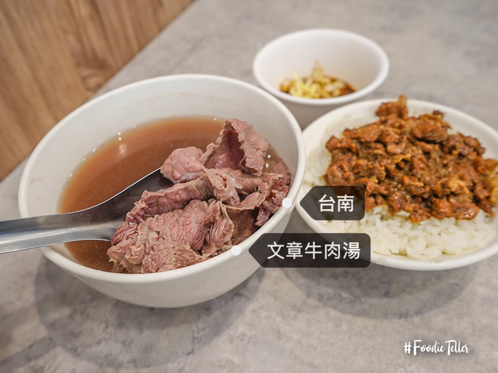
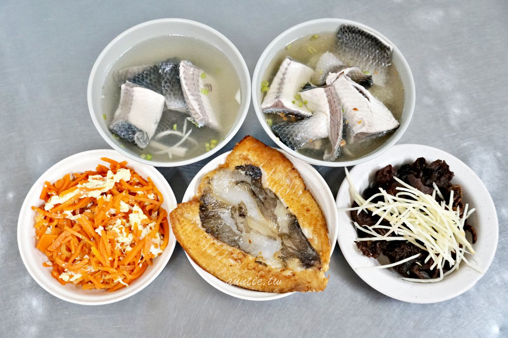

台南美食集合
文章牛肉湯（位於安平運河）
曾摘下Yahoo台南牛肉湯熱搜第一名，因生意興隆就算開店後都沒休息，店外幾乎無時無刻都大排長龍店內也都是人潮滿溢。
在此店家更可以吃到夢幻溫體牛舌，經過大火快炒，依然保持著軟嫩多汁口感，是多數行家饕客的最愛。

王氏魚皮(店家就在安平運河旁)
是許多旅人列為必吃的安平美食，店家就在安平運河旁，距離另一名店文章牛肉湯不過幾步之遙。 運河兩側有不少停車格。
店家也有自己的停車場相當便利。 王氏魚皮內用區可容納不少客人，要注意的是營業時間只到下午，真的是早午餐店來著。

矮仔成蝦仁飯（海安路上六千牛肉湯的對面）
西元1922年大正時期營業至今的【矮仔成蝦仁飯】已將邁入百年老店，店面也剛換新，讓用餐環境變得更加舒適。
蝦仁飯是由高湯與白飯拌炒而成，口感類似日式炊飯，鋪上約十隻真材實料的蝦仁，配上米飯每一口都是幸福。